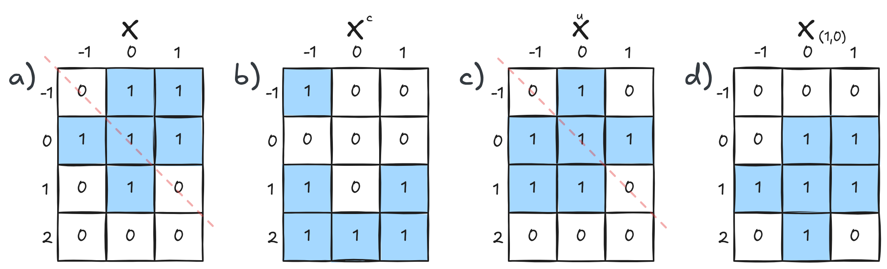
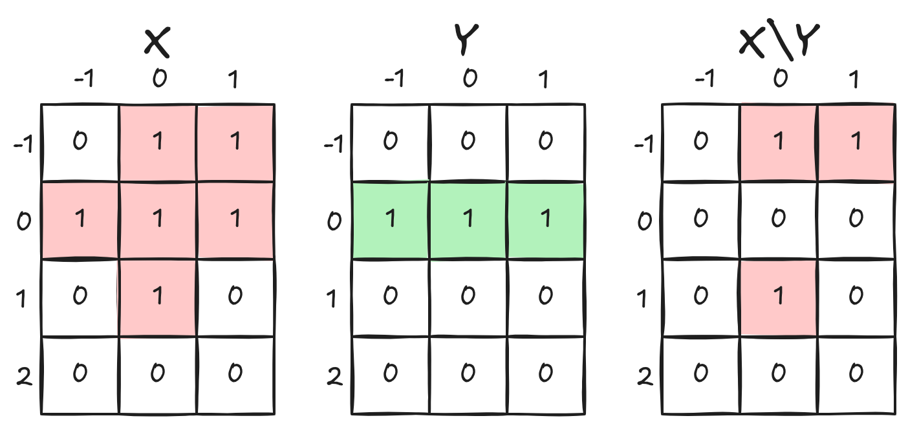
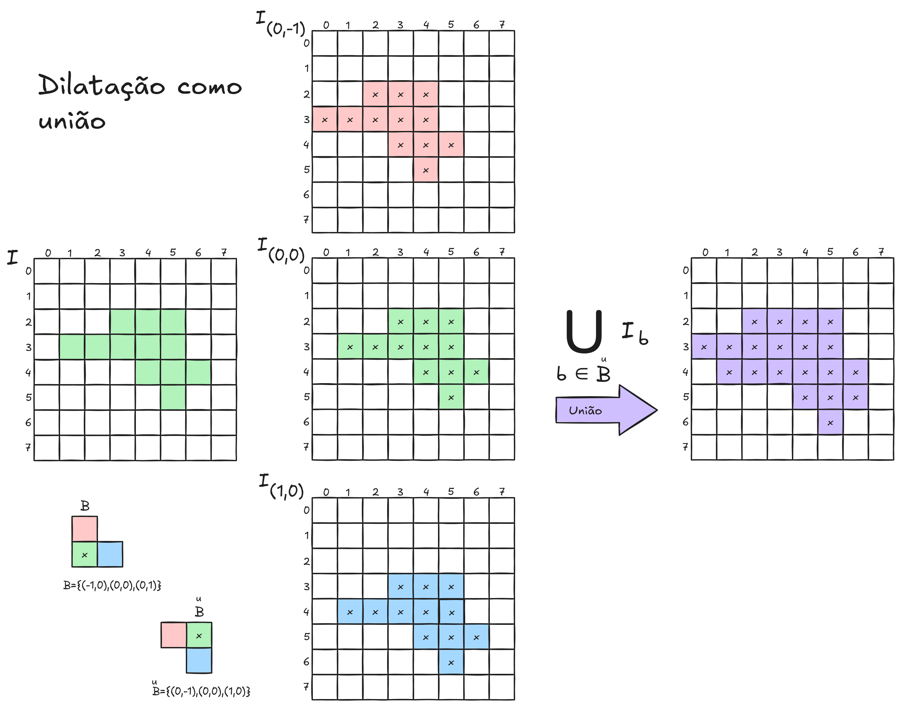
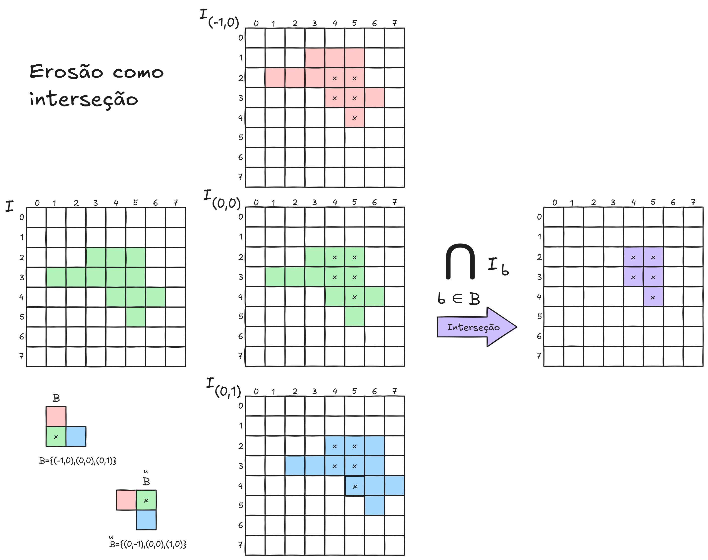
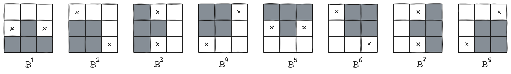
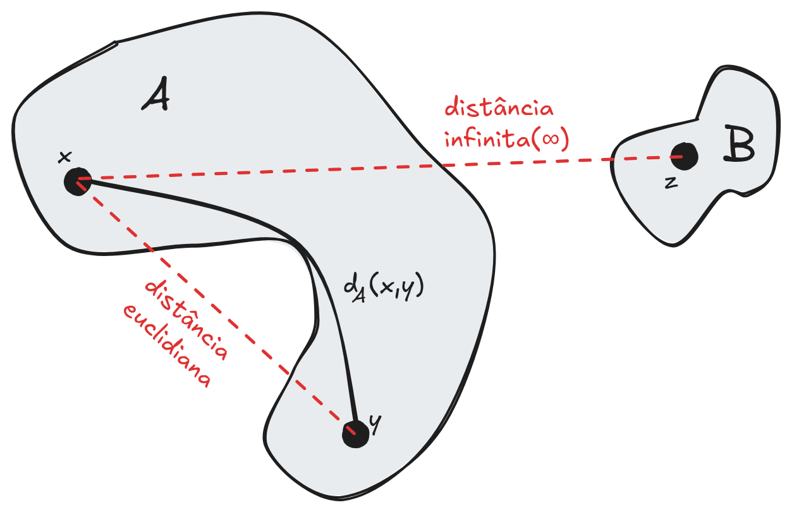
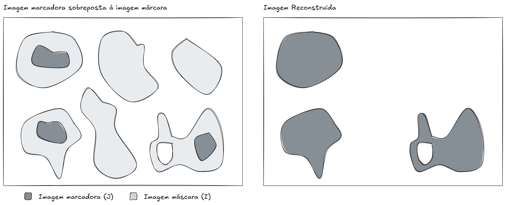
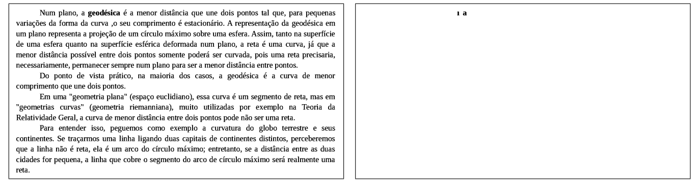

7 Morfologia Matemática
A Morfologia Matemática (Serra (1982), Serra (1988), Soille (2003), Heijmans (1994), Matheron (1975), Vincent (1993)) é um ramo não linear do processamento digital de imagens, desenvolvido na década de 1960 por George Matheron e Jean Serra. Essa área surgiu no contexto da análise de estruturas geométricas, tendo como principal objetivo extrair informações relevantes de imagens a partir da manipulação de suas formas.
Os trabalhos iniciais de Matheron e Serra foram fundamentados na ideia de que a informação contida em uma imagem pode ser analisada por meio de transformações baseadas em forma e estrutura. Nesse contexto, foram definidas duas operações fundamentais que constituem a base da morfologia matemática: a dilatação e a erosão. Essas operações permitem modificar a geometria dos objetos presentes na imagem, possibilitando tanto a expansão quanto a contração de suas regiões.
Originalmente, a teoria foi desenvolvida para imagens binárias, nas quais os pixels assumem apenas dois valores (tipicamente 0 e 1). Posteriormente, essa abordagem foi estendida para imagens em tons de cinza, permitindo uma aplicação mais ampla em problemas reais, nos quais as imagens possuem múltiplos níveis de intensidade.
A ideia central da morfologia matemática consiste em comparar a imagem de interesse com uma pequena forma previamente definida, chamada elemento estruturante. Esse elemento funciona como uma sonda que percorre a imagem, avaliando como sua forma se ajusta às estruturas presentes. A partir dessa comparação, é possível identificar padrões, destacar regiões específicas e extrair características importantes. O resultado das operações morfológicas depende diretamente da forma, do tamanho e da orientação do elemento estruturante utilizado.
O conjunto de transformações morfológicas é bastante amplo e abrange diversas aplicações no processamento de imagens. Essas operações são amplamente utilizadas na filtragem de ruídos, permitindo a remoção de pequenas imperfeições, e na segmentação de imagens, auxiliando na separação de objetos de interesse do fundo. Também desempenham um papel importante na restauração de imagens degradadas e na detecção de arestas, contribuindo para a identificação de contornos. Além disso, são empregadas na análise de textura e na extração de características relevantes, fundamentais em tarefas de reconhecimento de padrões. Outras aplicações incluem a esqueletização e o afinamento de estruturas, que simplificam a representação dos objetos, bem como a análise de forma e de componentes conectados. As transformações morfológicas também são úteis no preenchimento de regiões e curvas, além de contribuírem para técnicas de compressão de dados.
Devido à sua capacidade de analisar e manipular estruturas geométricas, a morfologia matemática tem sido aplicada com sucesso em diversas áreas. Na visão robótica, é utilizada para interpretar o ambiente, detectar obstáculos e reconhecer objetos. Na inspeção industrial e na microscopia, auxilia na identificação de defeitos, medições de precisão e análise de materiais em escala microscópica. No processamento de imagens médicas, contribui para a segmentação de órgãos, detecção de anomalias e apoio ao diagnóstico. No sensoriamento remoto, é empregada na análise de imagens de satélite, como na identificação de áreas urbanas, vegetação e corpos d’água. Na biologia, apoia o estudo de estruturas celulares e tecidos, enquanto na metalurgia é utilizada para examinar a microestrutura de materiais. Além disso, nos sistemas de leitura automática de caracteres (OCR), a morfologia é fundamental para a limpeza, segmentação e reconhecimento de letras e números.
Assim, a morfologia matemática constitui uma ferramenta poderosa e versátil para a análise estrutural de imagens, sendo amplamente utilizada em problemas que envolvem reconhecimento de padrões, segmentação e interpretação de cenas.
7.1 Imagens Binárias
As imagens binárias constituem a forma mais simples de representação no processamento digital de imagens. Nesse tipo de imagem, cada pixel pode assumir apenas dois valores possíveis, normalmente 0 ou 1, representando, respectivamente, o fundo e o objeto de interesse. Essa simplicidade torna as imagens binárias particularmente adequadas para análises estruturais e geométricas, sendo amplamente utilizadas em morfologia matemática.
Uma maneira conveniente e poderosa de representar imagens binárias é por meio da teoria dos conjuntos. Nesse contexto, uma imagem pode ser interpretada como um conjunto de pontos no plano discreto. Mais especificamente, considera-se que cada pixel com valor 1 pertence ao conjunto, enquanto os pixels com valor 0 não pertencem.
Assim, uma imagem binária \(A\) pode ser definida como:
\[ A = \{ (x, y) \in \mathbb{Z}^2 \mid f(x,y) = 1 \} \]
onde \(f(x,y)\) é a função que descreve a imagem. Dessa forma, a imagem deixa de ser vista apenas como uma matriz e passa a ser tratada como um conjunto de coordenadas no espaço bidimensional discreto.
Essa representação é fundamental para a morfologia matemática, pois permite aplicar diretamente operações clássicas da teoria dos conjuntos. A seguir, revisamos as principais operações utilizadas.

União
A união de dois conjuntos \(A\) e \(B\) corresponde ao conjunto de todos os pontos que pertencem a pelo menos um dos conjuntos:
\[ A \cup B = \{ z \mid z \in A \ \text{ou} \ z \in B \} \]
No contexto de imagens, a união combina os objetos presentes em ambas as imagens.
Interseção
A interseção corresponde aos pontos que pertencem simultaneamente aos dois conjuntos:
\[ A \cap B = \{ z \mid z \in A \ \text{e} \ z \in B \} \]
Essa operação destaca apenas as regiões comuns entre duas imagens.
Complemento
O complemento \(X^c\) do conjunto \(X\) ’e dado por \[X^c = \{p \in D_I: I(p) = 0\}\] Para a imagem binária da Figura 7.1 a) \[X = \{(-1,0),(-1,1),(0,-1),(0,0),(0,1),(1,0)\}\] \[X^c = \{(-1,-1),(1,-1),(1,1),(2,-1),(2,0),(2,1)\}\]
No caso de imagens, o complemento inverte os valores: pixels 1 tornam-se 0, e vice-versa.
Conjunto Simétrico
O conjunto simétrico \(\breve{X}\) do conjunto \(X\) é dado por \[\breve{X} = \{-p: p \in X\}\] Para a imagem da Figura 7.1: \[X = \{(-1,0),(-1,1),(0,-1),(0,0),(0,1),(1,0)\}\] \[\breve{X} = \{(1,0),(1,-1),(0,1),(0,0),(0,-1),(-1,0)\}\]
No caso de imagens, todas as coordenadas dos pontos do conjunto imagem são multiplicados por -1. Uma outra forma de interpretar essa operação é através do empelhamento dos pontos com relação a diagonal principal, representada por uma linha vermelha pontilha da imagem \(X\) e no seu conjunto simétrico \(\breve{X}\), na Figura 7.1.
Translação
A translação \(X_u\) do conjunto \(X\) por um vetor \(u\) é dado por \[X_u = \{q: q = p+u, p \in X\}\] Seja \[X = \{(-1,0),(-1,1),(0,-1),(0,0),(0,1),(1,0)\}\] Para a Figura 7.1 e \(u = (1,0)\): \[X_u = \{(0,0),(0,1),(1,-1),(1,0),(1,1),(2,0)\}\]
Essa operação é essencial em morfologia matemática, pois o elemento estruturante é frequentemente transladado ao longo da imagem para realizar comparações locais.

Diferença
O conjunto diferença \(X\backslash Y\) dos conjuntos \(X\) e \(Y\) é dado por \[X\backslash Y = X \cap Y^c\]
Em imagens, essa operação remove de \(A\) as regiões que coincidem com \(B\), conforme ilustrado na Figura 7.2.
A representação de imagens binárias como conjuntos e o uso dessas operações formam a base matemática das transformações morfológicas. A partir dessa fundamentação, é possível definir de maneira rigorosa operações como erosão e dilatação, que serão apresentadas nas próximas seções.
7.2 Conceitos Fundamentais da Morfologia Matemática
A morfologia matemática baseia-se na teoria dos conjuntos. Uma imagem binária pode ser interpretada como um conjunto de pontos no plano bidimensional, correspondentes aos pixels de valor 1.
As operações morfológicas envolvem dois conjuntos principais:
- Imagem: o conjunto que representa os objetos de interesse;
- Elemento estruturante: um pequeno conjunto que define a forma e a escala da operação.
O elemento estruturante atua como uma sonda que percorre a imagem, permitindo analisar e modificar suas estruturas geométricas.
7.3 Elemento Estruturante
O elemento estruturante é um componente central da morfologia matemática. Ele pode assumir diferentes formas, como linhas, quadrados, discos ou cruzes, e possui um ponto de origem que define sua posição relativa durante as operações.
A escolha do elemento estruturante influencia diretamente o resultado das operações morfológicas, pois determina quais características geométricas serão preservadas, realçadas ou removidas.
7.4 As Operações Morfológicas
Seja o elemento estruturante \(B_p\) um subconjunto finito centrado em \(p\), e seja \(I\) uma imagem binária. Neste caso, podemos considerar que:
- \(B_p\) está incluído em \(I\) (notação \(B_p \subset I\)).
- \(B_p\) intercepta \(I\) (notação \(B_p \cap I \neq \emptyset\)).
- \(B_p\) não intercepta \(I\) (notação \(B_p \cap I = \emptyset\)).
A dilatação de \(I\) por \(B_p\), denotada por \(\delta_B(I)\) ou \(I \oplus B\), pode ser definida de forma intuitiva como o conjunto de todos os pontos \(p\) tal que \(B_p\) intercepta \(I\). A erosão, por sua vez, de \(I\) por \(B_p\), denotada por \(\varepsilon_B(I)\) ou \(I \ominus B\), é o conjunto de todos os pontos \(p\) tal que \(B_p\) está incluído em \(I\).
Dilatação
A dilatação é uma operação morfológica que tende a expandir as regiões dos objetos em uma imagem binária. Formalmente, a dilatação de um conjunto Imagem \(A\) por um elemento estruturante \(B\) é definida como:
\[ \delta_B(I) = I \oplus B = \{p:I \cap B_p \neq \emptyset\} = \bigcup_{b \in \breve{B}} I_b \]
onde \(\breve{B}\) representa a reflexão (conjunto simétrico) do elemento estruturante \(B\). A Figura 7.3 mostra a dilatação como a união de várias translações da imagem, realizadas a partir de cada ponto do elemento estruturante refletido (simétrico)

A dilatação é frequentemente utilizada para preencher pequenas lacunas, conectar componentes próximos e suavizar contornos internos. O processo de dilatação é realizado como uma convolução do elemento estruturante.
O código interativo em sequência demostra o funcionamento da operação de dilatação. Clique no botão passo para posicionar o elemento estruturante no próximo pixel. Na imagem da direita é apresentada o resultado da dilatação:
Erosão
A erosão é a operação dual da dilatação e tem como efeito principal a redução das regiões dos objetos. A erosão de um conjunto Imagem \(A\) por um elemento estruturante \(B\) é definida como:
\[ \varepsilon_B(I) = I \ominus B = \{p:\breve{B}_p \subseteq I\} = \bigcap_{b \in B} I_b \]
A Figura 7.4 mostra a erosão como a interseção de várias translações da imagem, realizadas a partir de cada ponto do elemento estruturante original.

Essa operação é útil para remover pequenas protuberâncias, separar objetos conectados por regiões estreitas e eliminar ruídos isolados.
O código interativo em sequência demostra o funcionamento da operação de erosão. Clique no botão passo para posicionar o elemento estruturante no próximo pixel. Na imagem da direita é apresentada o resultado da erosão:
Abertura e Fechamento
A abertura e o fechamento são operações morfológicas fundamentais derivadas da erosão e da dilatação. Essas operações atuam diretamente sobre a forma dos objetos na imagem, promovendo alterações estruturais controladas.
A abertura tem como principal efeito a remoção de estruturas pequenas e finas, suavizando os contornos dos objetos e eliminando detalhes indesejados, como ruídos ou saliências estreitas. Já o fechamento atua de forma complementar, preenchendo pequenos buracos, conectando regiões próximas separadas por estruturas finas e também suavizando os contornos.
Devido a essas características, ambas as operações são amplamente utilizadas em processos de filtragem morfológica, sendo especialmente úteis para a limpeza e o refinamento de imagens, preservando as estruturas principais enquanto removem imperfeições menores.
Formalmente, a operação de abertura de uma imagem binária \(I\) por um elemento estruturante \(B\), denotada por \(\gamma_B(I)\) ou \(I \circ B\), é dada pela equação:
\[ \gamma_B(I) = I \circ B = \delta_B (\varepsilon_B(I)) \]
O fechamento de uma imagem binária \(I\) por um elemento estruturante \(B\), denotado por \(\varphi_B(I)\) ou \(I \bullet B\), é:
\[ \varphi_B(I) = I \bullet B = \varepsilon_B (\delta_B(I)) \]
O exemplo interativo seguinte está a implementação da operações de erosão, dilatação, abertura e fechamento para imagens pbm:
Operação Hit or Miss (Tudo ou nada)
A operação tudo-ou-nada (hit-or-miss transform) é uma operação morfológica utilizada para detectar padrões específicos em uma imagem binária. Diferentemente da erosão e da dilatação, que modificam formas, essa operação é voltada para o reconhecimento exato de configurações locais.
Ela funciona a partir de dois elementos estruturantes complementares: um que define os pixels que devem estar presentes (valor 1) e outro que define os pixels que devem estar ausentes (valor 0). Dessa forma, a operação estabelece um padrão completo que precisa ser respeitado na vizinhança analisada.
A ideia central é que, para cada posição da imagem, verifica-se se o padrão definido pelos elementos estruturantes é totalmente satisfeito. Se todas as condições forem atendidas, o resultado naquele ponto é 1; caso contrário, é 0, caracterizando o comportamento de “tudo ou nada”.
Formalmente, essa operação pode ser interpretada como a combinação de duas erosões: uma aplicada à imagem original e outra aplicada ao complemento da imagem. A detecção ocorre somente quando há correspondência exata entre o padrão desejado e a região da imagem.
Essa operação é especialmente útil em tarefas como detecção de cantos, cruzamentos ou terminações de linhas, bem como na identificação de padrões estruturais específicos em imagens binárias. Por sua natureza rigorosa, o hit-or-miss é sensível a variações e ruídos, sendo geralmente aplicado em imagens previamente processadas ou filtradas.
Afinamento e Espessamento
O afinamento (thinning) é uma operação morfológica utilizada para reduzir a espessura dos objetos em uma imagem binária, preservando sua estrutura essencial e conectividade. O objetivo principal é transformar regiões espessas em representações mais finas, geralmente com largura de um pixel, sem alterar significativamente a forma original dos objetos.
Essa operação é realizada de forma iterativa, removendo pixels das bordas dos objetos de acordo com critérios específicos. Em cada etapa, apenas os pixels que não comprometem a conectividade ou a topologia da estrutura são eliminados. Dessa forma, evita-se que o objeto seja fragmentado ou que partes importantes sejam perdidas durante o processo.
O afinamento pode ser visto como uma aplicação sucessiva da operação tudo-ou-nada com diferentes elementos estruturantes, que identificam padrões de pixels que podem ser removidos com segurança. Esses padrões são projetados para preservar características como continuidade e ramificações.
O resultado do afinamento é frequentemente chamado de esqueleto da imagem, pois mantém a forma básica e a estrutura dos objetos, mas com espessura mínima. Essa representação é muito útil em diversas aplicações, como reconhecimento de padrões, análise de formas, processamento de caracteres (OCR) e extração de características.
Devido à sua natureza iterativa e dependente de condições locais, o afinamento pode ser sensível a ruídos. Por isso, é comum aplicar etapas de pré-processamento, como filtragem ou abertura, para melhorar a qualidade do resultado final.
Formalmente, o afinamento de uma imagem binária \(I\) pelo elemento estruturante \(B\), denotado por \(I \bigcirc B\), pode ser definido em termos de uma transformação Tudo ou Nada:
\[ I \bigcirc B = I \backslash (I \otimes B) \]
Definido desta forma, o afinamento elimina apenas pontos da borda de \(I\). O afinamento deve ser aplicado até a idempotência, considerando-se uma sequência de elementos estruturantes homotópicos (que preservam a topologia da imagem) \(B^1,B^2,...\) aplicados iterativamente assim:
\[ \begin{array}{c} I^1 = I \bigcirc B^1\\ I^2 = I^1 \bigcirc B^2\\ I^3 = I^2 \bigcirc B^3\\ . . . \end{array} \]
O espessamento (thickening) é uma operação morfológica que tem como objetivo aumentar a espessura dos objetos em uma imagem binária, preservando sua forma e conectividade. Ele pode ser entendido como o processo complementar ao afinamento, pois, em vez de remover pixels das bordas, adiciona pixels de maneira controlada.
Essa operação também é realizada de forma iterativa, analisando a vizinhança de cada pixel por meio de elementos estruturantes. Em cada etapa, novos pixels são incorporados aos objetos apenas quando determinadas condições são satisfeitas, garantindo que a estrutura original não seja distorcida ou desconectada.
Assim como no afinamento, o espessamento pode ser formulado com base na operação tudo-ou-nada. Nesse caso, padrões específicos são utilizados para identificar onde os pixels devem ser adicionados. Quando um padrão é reconhecido, um novo pixel é inserido na posição correspondente, promovendo o crescimento do objeto.
O espessamento é útil em aplicações onde se deseja reforçar estruturas finas, preencher pequenas falhas ou tornar regiões mais evidentes. Ele também pode ser empregado na reconstrução de formas ou na preparação de imagens para etapas posteriores de processamento.
Por ser uma operação que adiciona informação à imagem, o espessamento pode amplificar ruídos ou imperfeições. Por isso, assim como no afinamento, é recomendável aplicar técnicas de pré-processamento para garantir melhores resultados.
Formalmente, o espessamento é o dual morfológico do afinamento e é definido por:
\[ I \bigodot B = I \cup (I \otimes B) \]
Onde \(B\) é um elemento estruturante homotópico de espessamento (complemento da família homotópica empregada no afinamento). Esta operação pode ser obtida a partir de um processamento sequencial do tipo:
\[ \begin{array}{c} I^1 = I \bigodot B^1\\ I^2 = I^1 \bigodot B^2\\ I^3 = I^2 \bigodot B^3\\ . . . \end{array} \]
Na Figura 7.5 está representada uma família homotópica para afinamento ou espessamento

O exemplo interativo seguinte simula o processo de afinamento para uma imagem considerando a família homotópia da Figura 7.5. Os controles na simulação servem para executar o algoritmo de afinamento passo a passo, resetar a simulação, interromper ou continuar de forma automática. Ainda é possível controlar a velocidade da simulação automática. A cada passo é mostrado o elemento da família homotópica que está sendo utilizado para o afinamento na imagem e abaixo dela.
No exemplo interativo seguinte está uma implementação do algoritmo rápido de afinamento de Zhang e Suen (1984) para aplicação à silhueta de um homem.
Operações Geodésicas
As operações geodésicas em morfologia matemática tratam da análise de distâncias e caminhos definidos no interior de um conjunto, geralmente associado a um objeto em uma imagem binária. Diferentemente das medidas clássicas de distância, que consideram o espaço como um todo, as operações geodésicas levam em conta apenas os pontos pertencentes ao conjunto de interesse, respeitando sua forma e sua conectividade.
Sejam \(x\) e \(y\) dois pontos pertencentes a um conjunto \(A\), conforme ilustrado na Figura 7.6. Define-se como distância geodésica \(d_A(x,y)\) o comprimento do menor caminho que conecta \(x\) a \(y\), sendo esse caminho inteiramente contido em \(A\). Em outras palavras, considera-se o menor percurso possível entre esses pontos sem sair da região definida por \(A\). Caso não exista tal caminho — isto é, se \(x\) e \(y\) pertencem a componentes desconexas — a distância geodésica é definida como infinita.

Essa definição pode ser interpretada de forma intuitiva ao se considerar uma imagem binária: os pontos pertencentes ao objeto formam uma região pela qual é permitido “caminhar”, enquanto o fundo atua como uma barreira. Assim, a distância geodésica corresponde ao menor número de passos necessários para ir de um ponto a outro, deslocando-se apenas por pixels vizinhos pertencentes ao objeto, de acordo com uma conectividade previamente definida, como 4 ou 8 vizinhos.
A distância geodésica difere da distância euclidiana justamente por levar em consideração a geometria e a topologia do objeto. Enquanto a distância euclidiana corresponde ao comprimento da linha reta entre dois pontos, a distância geodésica acompanha a forma do objeto, podendo resultar em caminhos mais longos quando há curvaturas ou obstáculos internos.
Esse conceito constitui a base para diversas operações em morfologia matemática, como dilatações e erosões geodésicas, além da reconstrução morfológica. Nessas operações, a propagação ou retração de regiões ocorre de forma controlada, sendo limitada por um conjunto máscara, o que permite preservar estruturas relevantes da imagem. Dessa forma, as operações geodésicas são fundamentais em aplicações como segmentação, extração de esqueletos e análise de formas.
A partir da métrica geodésica \(d_A\), pode-se estender o conceito de distância para medir a separação entre um ponto e um subconjunto de \(A\). Seja \(x \in A\) e \(B \subseteq A\). Define-se a distância geodésica entre o ponto \(x\) e o conjunto \(B\), denotada por \(d_A(x,B)\), como a menor distância geodésica entre \(x\) e qualquer ponto \(y\) pertencente a \(B\). Em outras palavras, considera-se todos os possíveis caminhos, inteiramente contidos em \(A\), que ligam \(x\) a pontos de \(B\), e escolhe-se aquele de menor comprimento.
Formalmente, essa definição pode ser expressa como:
\[ d_A(x,B) = \inf_{y \in B} d_A(x,y) \]
ou seja, \(d_A(x,B)\) é o ínfimo das distâncias geodésicas entre \(x\) e cada elemento \(y\) do conjunto \(B\). Quando existe pelo menos um caminho conectando \(x\) a algum ponto de \(B\) dentro de \(A\), essa distância será finita; caso contrário, será infinita.
Um dos principais interesses no uso dessa função está na sua capacidade de tratar adequadamente problemas de conectividade. Como a distância é calculada apenas ao longo de caminhos contidos em \(A\), ela reflete diretamente a estrutura topológica do conjunto. Dessa forma, é possível distinguir naturalmente regiões conectadas de regiões desconexas, o que é fundamental em diversas aplicações de processamento de imagens, como segmentação, reconstrução morfológica e análise de componentes conectados.
Todas as operações morfológicas, como dilatação e erosão, podem ser reinterpretadas a partir da métrica geodésica. Nesse contexto, considera-se um conjunto \(X\) que define o domínio ou máscara e um subconjunto \(Y \subseteq X\), sobre o qual se deseja aplicar a operação. A ideia central é utilizar a distância geodésica em \(X\) para definir regiões de influência em torno dos pontos.
Para isso, define-se a bola geodésica de raio \(\lambda\) centrada em um ponto \(x \in X\), denotada por \(B_X(x,\lambda)\), como o conjunto de todos os pontos de \(X\) cuja distância geodésica até \(x\) é menor ou igual a \(\lambda\). Em termos formais: \[ B_X(x,\lambda) = \{ y \in X : d_X(x,y) \leq \lambda \}. \]
Essa bola representa, portanto, todos os pontos que podem ser alcançados a partir de \(x\) por caminhos contidos em \(X\) com comprimento limitado por \(\lambda\).
Com base nessa definição, a dilatação geodésica de \(Y\) em \(X\) com raio \(\lambda\), denotada por \(\delta_X^{\lambda}(Y)\), pode ser descrita como o conjunto de todos os pontos \(x \in X\) cuja bola geodésica intercepta \(Y\). Em outras palavras, um ponto \(x\) pertence à dilatação se for possível alcançar algum ponto de \(Y\) a partir de \(x\) por um caminho em \(X\) de comprimento no máximo \(\lambda\). Formalmente:
\[ \delta_X^\lambda(Y) = \{ x \in X : B_X(x,\lambda) \cap Y \neq \emptyset \}. \]
Essa formulação mostra que a dilatação geodésica pode ser interpretada como uma expansão de \(Y\) dentro de \(X\), limitada pela estrutura do próprio conjunto \(X\). Diferentemente da dilatação clássica, que se baseia apenas em um elemento estruturante fixo, a dilatação geodésica respeita a geometria e a conectividade do domínio, impedindo que a expansão ultrapasse regiões proibidas. Essa característica torna as operações geodésicas particularmente adequadas para aplicações em que é necessário controlar a propagação dentro de formas complexas, como na reconstrução morfológica e na segmentação de imagens.
Dilatação geodésica
A dilatação geodésica de ordem \(n\), definida no espaço \(\mathbb{Z}^2\), pode ser obtida por meio da aplicação iterativa de dilatações geodésicas elementares de ordem 1. Ou seja, a dilatação geodésica de ordem maior é construída a partir da repetição sucessiva da operação básica.
A dilatação geodésica unitária é definida por:
\[ \delta^{1}_{X}(Y) = (Y \oplus B) \cap X, \]
onde \(B\) é o elemento estruturante e \(X\) atua como máscara, limitando o crescimento do conjunto \(Y\).
A partir dessa definição, a dilatação geodésica de ordem \(n\) é obtida pela composição iterativa dessa operação, isto é, aplicando-se \(n\) vezes a dilatação geodésica unitária sobre o resultado anterior:
\[ \delta^{n}_{X}(Y) = \underbrace{\delta^{1}_{X}\big(\delta^{1}_{X}(\cdots \delta^{1}_{X}(Y)\cdots)\big)}_{\text{n vezes}}. \]
Essa formulação evidencia que a dilatação geodésica ocorre de maneira progressiva, expandindo o conjunto \(Y\) dentro do domínio \(X\) passo a passo, sempre respeitando as restrições impostas pela máscara.
Erosão geodésica
De forma análoga à dilatação geodésica, pode-se definir a erosão geodésica a partir da métrica geodésica. Seja \(Y \subseteq X\). O conjunto \(\lambda\)-erodido de \(Y\) em \(X\) é formado pelos pontos \(x \in X\) cuja bola geodésica de raio \(\lambda\), centrada em \(x\), está completamente contida em \(Y\). Intuitivamente, isso significa que apenas os pontos suficientemente “internos” a \(Y\), isto é, afastados de suas bordas segundo a distância geodésica em \(X\), permanecem após a erosão.
Formalmente, a erosão geodésica é definida por:
\[ \varepsilon^{\lambda}_{X}(Y) = \{ x \in X : B_X(x,\lambda) \subseteq Y \}. \]
Nessa expressão, \(B_X(x,\lambda)\) representa a bola geodésica centrada em \(x\), isto é, o conjunto de todos os pontos de \(X\) cuja distância geodésica até \(x\) é menor ou igual a \(\lambda\).
Essa definição evidencia que a erosão geodésica atua como um processo de contração controlada de \(Y\), eliminando regiões próximas às bordas e preservando apenas as partes que possuem “espessura” suficiente dentro do domínio \(X\). Diferentemente da erosão clássica, a versão geodésica respeita as restrições impostas pela máscara \(X\), impedindo que a operação considere pontos fora desse domínio.
Do ponto de vista prático, a erosão geodésica é particularmente útil em aplicações que exigem análise da estrutura interna dos objetos, como a remoção de ruídos finos, a identificação de regiões centrais e o refinamento de segmentações. Assim como na dilatação geodésica, essa operação preserva a conectividade definida em \(X\), tornando-se uma ferramenta importante no processamento e na análise de imagens digitais.
Reconstrução geodésica
Sejam \(I\) e \(J\) duas imagens binárias definidas sobre o mesmo domínio discreto \(D\), tais que \(J \subseteq I\), conforme ilustrado na Figura 7.7. Isso significa que, para todo ponto \(p \in D\), sempre que \(J(p) = 1\), então necessariamente \(I(p) = 1\). Nesse contexto, a imagem \(J\) é denominada imagem marcadora, pois indica os pontos iniciais a partir dos quais uma operação será conduzida, enquanto \(I\) é chamada de imagem máscara, pois define as restrições espaciais dentro das quais essa operação pode ocorrer. Seja ainda \(I_1, I_2, \ldots, I_n\) a decomposição de \(I\) em seus componentes conexos.

A reconstrução morfológica de \(I\) a partir do marcador \(J\), denotada por \(\rho_I(J)\), é definida como a união de todos os componentes conexos de \(I\) que contêm pelo menos um ponto pertencente a \(J\). Em outras palavras, selecionam-se apenas as regiões de \(I\) que são “atingidas” pelo marcador \(J\), descartando aquelas que não possuem qualquer conexão com ele. Formalmente, essa operação é expressa por:
\[ \rho_I(J) = \bigcup_{J \cap I_k \neq \emptyset} I_k. \]
Do ponto de vista intuitivo, a reconstrução pode ser entendida como um processo de “propagação” a partir dos pontos marcados em \(J\), que se expande dentro da máscara \(I\), mas sem ultrapassar seus limites. Essa propagação ocorre ao longo dos caminhos definidos pela conectividade da imagem, garantindo que apenas os componentes conectados ao marcador sejam preservados.
Essa operação é amplamente utilizada em processamento de imagens, especialmente em tarefas de segmentação, remoção de objetos indesejados e filtragem baseada em conectividade. Por exemplo, é possível eliminar pequenos ruídos preservando apenas regiões relevantes previamente marcadas, ou ainda reconstruir partes de objetos a partir de sementes iniciais, sempre respeitando a estrutura definida pela máscara \(I\).
A reconstrução morfológica é, em geral, formulada a partir do conceito de distância geodésica. Nesse contexto, ela pode ser obtida por meio da aplicação iterativa da dilatação geodésica elementar do marcador \(J\) sob a máscara \(I\), até que o processo se estabilize, isto é, até atingir a idempotência (quando novas iterações não produzem mais alterações).
Formalmente, a reconstrução é dada por:
\[ \rho_I(J) = \bigcup_{n \geq 1} \delta^n_I(J), \]
o que indica que o resultado corresponde à união das sucessivas dilatações geodésicas de \(J\) em \(I\), realizadas até que não haja mais crescimento do conjunto.
O exemplo seguinte ilustra, de forma visual e interativa, a aplicação de operações geodésicas em imagens binárias. Inicialmente, é gerada uma imagem contendo caracteres aleatórios, que em seguida é convertida para uma representação binária, na qual os objetos (letras) são definidos por pixels brancos e o fundo por pixels pretos.
Na etapa seguinte, aplica-se a erosão binária com um elemento estruturante retangular de tamanho ajustável. Essa operação tem o efeito de manter os componentes que contém as propriedades de altura e largura do elemento estruturante selecionado. O resultado da erosão é utilizado como imagem marcadora, enquanto a imagem binária original atua como máscara.
A reconstrução geodésica é então realizada por um processo iterativo de crescimento da imagem marcadora, limitado pela máscara. A cada passo, os pixels se expandem apenas para regiões permitidas, preservando a conectividade original. O processo termina quando não há mais alterações.
Como resultado, são reconstruídas apenas as letras do texto gerado que satisfazem as propriedades de largura e altura definidas pelo elemento estruturante.
7.5 Propriedades das Operações Morfológicas
As operações morfológicas apresentam propriedades importantes, como:
- Idempotência: a aplicação repetida de abertura ou fechamento não altera o resultado após a primeira aplicação;
- Dualidade: erosão e dilatação, assim como abertura e fechamento, são operações duais;
- Invariância por translação: o resultado das operações não depende da posição absoluta dos objetos na imagem.
Essas propriedades fornecem uma base teórica sólida para o uso da morfologia matemática em sistemas de processamento de imagens.
7.6 Aplicações da Morfologia Binária
A morfologia matemática binária é amplamente utilizada em diversas aplicações no processamento digital de imagens, desempenhando um papel fundamental em diferentes etapas de análise e interpretação. Entre suas principais aplicações destacam-se a remoção de ruído impulsivo, o preenchimento de regiões, a extração de contornos e a análise de conectividade entre componentes da imagem. Além disso, a morfologia é frequentemente empregada como etapa de pré-processamento em tarefas mais complexas, como segmentação e reconhecimento de padrões, contribuindo para a melhoria da qualidade dos resultados. Sua simplicidade conceitual, aliada à sua eficiência computacional, torna a morfologia matemática uma ferramenta essencial no processamento de imagens digitais.
7.7 Morfologia em tons de cinza (numérica)
As operações morfológicas clássicas — como dilatação, erosão, abertura e fechamento — foram originalmente definidas para imagens binárias, nas quais os pixels pertencem ou não a um conjunto. No entanto, essas operações podem ser naturalmente estendidas para imagens em níveis de cinza, dando origem à chamada morfologia numérica. Nessa abordagem, em vez de trabalhar apenas com valores discretos (0 ou 1), os pixels passam a assumir valores inteiros dentro de um intervalo, representando diferentes intensidades.
Nas imagens binárias, as operações morfológicas são formuladas com base em operações de conjuntos, como união e interseção. Já no caso de imagens em níveis de cinza ou coloridas, essa interpretação não é mais adequada, pois não há apenas presença ou ausência de um pixel, mas sim diferentes graus de intensidade. Assim, as operações deixam de representar inclusão ou remoção de pixels e passam a promover modificações graduais nos valores de intensidade.
Para viabilizar essa generalização, as operações de conjunto são substituídas por operações aritméticas. Em particular, a união é associada ao operador máximo (max), enquanto a interseção corresponde ao operador mínimo (min). Dessa forma, a dilatação em níveis de cinza consiste em atribuir a cada pixel o maior valor encontrado em sua vizinhança definida pelo elemento estruturante, enquanto a erosão atribui o menor valor dessa mesma vizinhança.
Essa interpretação permite entender a dilatação como uma operação que tende a expandir regiões claras (aumentando os valores de intensidade), enquanto a erosão tende a expandir regiões escuras (reduzindo os valores). Como consequência, as operações compostas, como abertura e fechamento, mantêm suas propriedades fundamentais: a abertura suaviza contornos e remove detalhes brilhantes pequenos, enquanto o fechamento preenche pequenas regiões escuras e conecta estruturas próximas.
Portanto, a morfologia numérica preserva a essência das operações morfológicas binárias, mas adapta sua formulação para lidar com a riqueza de informações presente em imagens em tons de cinza. Essa extensão amplia o campo de aplicação da morfologia matemática, tornando-a uma ferramenta poderosa para filtragem, realce e análise de imagens reais.
7.8 Fundamentos da Morfologia em Tons de Cinza
A morfologia matemática em tons de cinza baseia-se em operadores de máximo e mínimo aplicados localmente à imagem, utilizando um elemento estruturante que também pode ser definido como uma função.
Seja \(f\) a imagem de entrada e \(b\) um elemento estruturante. As operações morfológicas são definidas de forma a preservar e analisar a geometria das superfícies de intensidade da imagem.
Elemento Estruturante
Na morfologia em tons de cinza, o elemento estruturante pode ser:
- Plano (flat): assume valor constante, geralmente zero;
- Não plano (non-flat): definido por uma função com valores variados.
Elementos estruturantes planos são os mais utilizados na prática, pois simplificam as operações e facilitam a interpretação dos resultados.
Dilatação em Tons de Cinza
A dilatação em tons de cinza tende a realçar regiões claras e expandir máximos locais. Para um elemento estruturante plano, a dilatação é definida como:
\[ (f \oplus b)(x,y) = \max_{(s,t) \in b} { f(x - s, y - t) } \]
Essa operação eleva os valores de intensidade nas vizinhanças definidas pelo elemento estruturante, sendo útil para realçar detalhes claros e preencher vales rasos.
Erosão em Tons de Cinza
A erosão em tons de cinza é a operação dual da dilatação e tem como efeito principal a atenuação de regiões claras e a expansão de mínimos locais. Para um elemento estruturante plano, a erosão é definida como:
\[ (f \ominus b)(x,y) = \min_{(s,t) \in b} { f(x + s, y + t) } \]
Essa operação é utilizada para eliminar picos isolados e reduzir variações abruptas de intensidade.
Abertura em Tons de Cinza
A abertura em tons de cinza é definida como a erosão seguida de uma dilatação:
\[ f \circ b = (f \ominus b) \oplus b \]
A abertura suaviza a imagem, removendo picos brilhantes menores que o elemento estruturante, enquanto preserva a forma geral das regiões maiores.
Fechamento em Tons de Cinza
O fechamento é a operação dual da abertura, definido como:
\[ f \bullet b = (f \oplus b) \ominus b \]
Essa operação é eficaz para preencher vales escuros e suavizar descontinuidades negativas na superfície de intensidade.
Top hat e Bottom hat
As operações top-hat e bottom-hat são obtidas a partir da combinação das operações morfológicas de abertura e fechamento com a subtração de imagens. Essas transformações são particularmente úteis para destacar detalhes locais e reduzir efeitos indesejados de iluminação não uniforme, sendo amplamente empregadas em tarefas de realce e análise de imagens.
A operação top-hat, também chamada de white top-hat, é definida como a diferença entre a imagem original ( f ) e sua abertura por um elemento estruturante ( b ), isto é, ( (f) = f - (f b) ). Como a abertura tende a remover pequenos objetos claros que não conseguem conter o elemento estruturante, o resultado dessa subtração corresponde exatamente a esses elementos removidos. Dessa forma, o top-hat atua como um operador que evidencia pequenos detalhes brilhantes presentes na imagem, especialmente quando estes estão sobre um fundo mais escuro ou com variações suaves de intensidade.
Por outro lado, a operação bottom-hat, ou black top-hat, é definida como a diferença entre o fechamento da imagem e a imagem original, ou seja, ( (f) = (f b) - f ). O fechamento tem como efeito principal eliminar pequenas regiões escuras, preenchendo cavidades e suavizando descontinuidades negativas. Assim, ao subtrair a imagem original do resultado do fechamento, obtêm-se exatamente essas regiões escuras removidas. Consequentemente, o bottom-hat é utilizado para destacar pequenos objetos escuros ou detalhes negativos presentes na imagem, especialmente quando situados sobre fundos mais claros.
De maneira geral, essas duas operações podem ser interpretadas como filtros morfológicos que isolam componentes locais da imagem. Enquanto o top-hat evidencia estruturas claras que foram eliminadas pela abertura, o bottom-hat destaca estruturas escuras removidas pelo fechamento. Em ambos os casos, essas operações atuam como ferramentas eficazes para realçar detalhes finos e compensar variações de fundo, sendo particularmente úteis em aplicações como inspeção visual, análise biomédica e processamento de documentos.
O exemplo interativo seguinte apresenta essas operações:
7.9 Aplicações da Morfologia em Tons de Cinza
A morfologia matemática em tons de cinza é amplamente utilizada em aplicações como:
- realce e suavização de imagens;
- supressão de ruído impulsivo;
- extração de estruturas relevantes;
- pré-processamento para segmentação;
- análise de superfícies e texturas.
Sua capacidade de preservar características geométricas torna-a especialmente útil em imagens naturais e médicas.
7.10 Considerações Finais
Ao longo deste capítulo, foram apresentados os principais fundamentos da morfologia matemática, tanto no contexto de imagens binárias quanto em níveis de cinza. Partindo de operações básicas como dilatação e erosão, foi possível compreender como a interação entre a imagem e o elemento estruturante permite modificar, analisar e extrair informações relevantes com base na forma e na estrutura dos objetos presentes.
No caso das imagens binárias, as operações morfológicas mostraram-se ferramentas intuitivas e eficazes para manipulação de formas, permitindo expandir, reduzir, conectar ou separar regiões. A partir dessas operações elementares, foram introduzidas transformações mais elaboradas, como abertura e fechamento, que possibilitam a remoção seletiva de ruídos e a preservação de características estruturais importantes. Essas operações evidenciam o papel fundamental do elemento estruturante, cuja forma e tamanho determinam diretamente o tipo de processamento realizado.
A extensão desses conceitos para imagens em níveis de cinza amplia o poder da morfologia matemática. Nesse contexto, as operações passam a atuar sobre valores de intensidade, sendo interpretadas como filtros não lineares baseados em máximos e mínimos locais. Isso permite não apenas a manipulação da geometria dos objetos, mas também o controle de variações de brilho e contraste, tornando a morfologia uma ferramenta versátil para o processamento de imagens reais.
Além das operações clássicas, foram discutidas transformações derivadas, como gradiente morfológico, top-hat e bottom-hat, que permitem destacar bordas, realçar detalhes finos e compensar variações de iluminação. Essas operações demonstram como a combinação de operadores básicos pode gerar técnicas mais sofisticadas, capazes de evidenciar informações específicas da imagem de maneira eficiente.
De modo geral, a morfologia matemática se destaca por sua abordagem baseada na forma, diferenciando-se de métodos puramente baseados em intensidade ou frequência. Sua natureza não linear e sua dependência do elemento estruturante conferem grande flexibilidade, permitindo sua adaptação a diferentes tipos de problemas e aplicações. Entre essas aplicações, destacam-se a segmentação de imagens, a remoção de ruídos, a análise de formas, o processamento de imagens médicas e a inspeção automatizada.
Por fim, é importante ressaltar que o sucesso das operações morfológicas depende fortemente da escolha adequada do elemento estruturante, bem como da compreensão das características da imagem a ser processada. Assim, mais do que um conjunto de operações isoladas, a morfologia matemática constitui um arcabouço conceitual poderoso, que, quando bem aplicado, permite explorar de forma eficaz a estrutura e os detalhes das imagens digitais.
Exercício 1 — Conceitual
Explique com suas palavras:
- O que é morfologia matemática
- Qual o objetivo das operações morfológicas em imagens
- Em que tipos de imagens essas operações são mais utilizadas
Exercício 2 — Elemento estruturante
Explique:
- O que é um elemento estruturante
- Como seu formato influencia o resultado das operações
- Dê exemplos de elementos estruturantes comuns (3×3, cruz, disco, etc.)
Exercício 3 — Erosão
Explique:
- O que é a operação de erosão
- Qual o efeito da erosão sobre os objetos da imagem
- Em quais situações essa operação é útil
Exercício 4 — Dilatação
Explique:
- O que é a operação de dilatação
- Como ela altera os objetos na imagem
- Diferença prática entre dilatação e erosão
Exercício 5 — Abertura e fechamento
Explique:
- O que é abertura (erosão seguida de dilatação)
- O que é fechamento (dilatação seguida de erosão)
- Em quais situações cada operação é mais adequada
Exercício 6 — Análise visual
Considere uma imagem binária com ruído:
- Que tipo de ruído pode ser removido com abertura?
- Que tipo de falha pode ser corrigida com fechamento?
- Como essas operações afetam a forma dos objetos?
Exercício 7 — Sequência de operações
Explique o efeito de aplicar, nessa ordem:
- Erosão seguida de dilatação
- Dilatação seguida de erosão
Compare os resultados e discuta as diferenças.
Exercício 8 — Bordas morfológicas
Explique:
- Como extrair bordas utilizando operações morfológicas
- Qual a diferença entre borda interna e externa
- Em que aplicações isso pode ser útil
Exercício 9 — Implementação prática (operações básicas)
Implemente um programa que:
- Leia uma imagem binária
- Aplique:
- erosão
- dilatação
- Permita escolher o elemento estruturante (ex: 3×3)
- Mostre ou salve os resultados
Exercício 10 — Implementação prática (abertura e fechamento)
Implemente um programa que:
- Aplique abertura
- Aplique fechamento
- Compare os resultados em imagens com ruído
Exercício 11 — Segmentação
Utilize operações morfológicas para:
- Melhorar uma imagem segmentada
- Remover pequenos objetos indesejados
- Preencher falhas em objetos maiores
Exercício 12 — Comparação
Compare o uso de morfologia com:
- filtros lineares (ex: média)
- técnicas de limiarização
Explique as vantagens das operações morfológicas.
Questão reflexiva
Explique a importância da morfologia matemática em aplicações como:
- Análise de documentos
- Processamento de imagens médicas
- Visão computacional
- Reconhecimento de padrões
Discuta como a escolha do elemento estruturante influencia os resultados.
Objetivo
O objetivo desta atividade é explorar conceitos de morfologia matemática, em particular a operação de reconstrução geodésica, utilizada para realizar filtragem e seleção de regiões específicas em imagens binárias.
Problema
Dadas duas imagens binárias definidas no mesmo domínio:
- uma imagem máscara (I)
- uma imagem marcadora (J), tal que \(J \subseteq I\)
A reconstrução geodésica consiste em recuperar apenas os componentes conexos da imagem máscara que contêm pontos marcados.
Nesta atividade, você deverá implementar um programa capaz de reconstruir apenas as regiões de interesse a partir de pontos marcados fornecidos em um arquivo.
Descrição
Desenvolva um programa que:
Leia uma imagem binária no formato PBM
Leia um arquivo texto contendo coordenadas (linha e coluna) dos pontos marcadores
A partir desses dados, o programa deverá:
Interpretar os pontos como a imagem marcadora J
Considerar a imagem original como a máscara I
Implemente a reconstrução geodésica, que pode ser realizada por:
- dilatações geodésicas sucessivas até a idempotência
ou
- crescimento das regiões a partir das marcas (ex: busca em largura com fila)
- dilatações geodésicas sucessivas até a idempotência
O resultado deve conter:
- apenas os componentes conexos da imagem que possuem pelo menos um ponto marcado
Exemplo
Dado um conjunto de coordenadas que marcam posições específicas em uma imagem (por exemplo, caracteres em um texto), o programa deve reconstruir apenas essas regiões, eliminando as demais.
2
22 435
22 468Para imagem abaixo, somente as letras \(i\) e \(a\) devem ser reconstruídas.

Entrada
- Imagem binária no formato PBM
- Arquivo texto contendo coordenadas das marcas
Saída
O programa deve gerar:
- Imagem reconstruída contendo apenas as regiões marcadas
Execução
O programa deve ser executado via linha de comando:
./reconstroi imagem.pbm marcas.txt